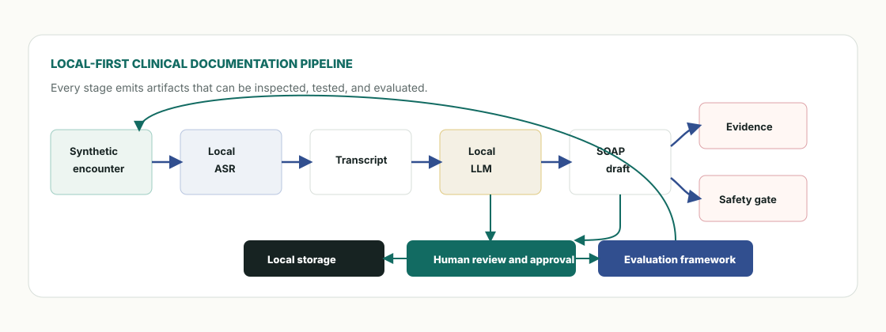
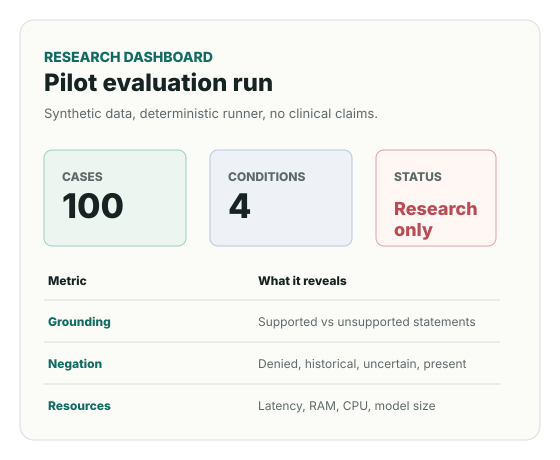

Local documentation path
Audio or script input moves through faster-whisper, local note drafting, span grounding, and a schema-checked SOAP note.
Local-first clinical AI research prototype
A source-grounded clinical documentation framework for studying whether useful draft notes can be generated locally, reviewed by a named human, and evaluated under realistic resource constraints.
Research question
OfflineScribeAI does not claim to diagnose, treat, replace clinicians, or validate clinical safety. It measures documentation behavior: fact preservation, unsupported statements, negation, temporal context, source evidence, review burden, latency, and local resource use.
System
The repository keeps the workstation and the research harness side by side: FastAPI and React for the local review workflow, Python CLI tools for benchmark runs, seeded synthetic data, and repeatable metrics.

Audio or script input moves through faster-whisper, local note drafting, span grounding, and a schema-checked SOAP note.
Drafts remain drafts until a reviewer is named. Edits, approvals, and rejections are logged as research signals.
Command-line runs compare baseline, retrieval, grounded, and verifier conditions on the same synthetic cases.
Unsupported claims, negation flips, temporal errors, medication errors, and resource failures are preserved instead of hidden.
Evaluation
The committed runner uses deterministic stubs so tests and reports can run without GPUs or API keys. Live model comparisons are explicitly marked as planned until they are executed and reviewed.

Failure modes
The project treats embarrassing cases as part of the evidence. A failed case should show the input, expected behavior, actual output, likely reason, and mitigation.
Safety posture
The system drafts documentation and flags evidence problems. It does not make diagnoses, treatment decisions, or EHR writes.
The benchmark is synthetic and does not represent real clinical populations. Real data would require separate governance.
Transcript content is treated as data. Instruction-like text inside an encounter is a safety test, not a command source.
Reproduce
These commands run the package tests, backend tests, UI tests, and seeded evaluation path used by the repository.
git clone https://github.com/zoryktom/OfflineScribeAI.git
cd OfflineScribeAI
python -m pip install -e ".[dev]" -r backend/requirements.txt
python -m pytest tests -q
cd backend && python -m pytest -q
cd ../desktop-app && npm ci && npm test -- --run
cd .. && python -m offlinescribe.cli eval run --config experiments/configs/pilot.yaml